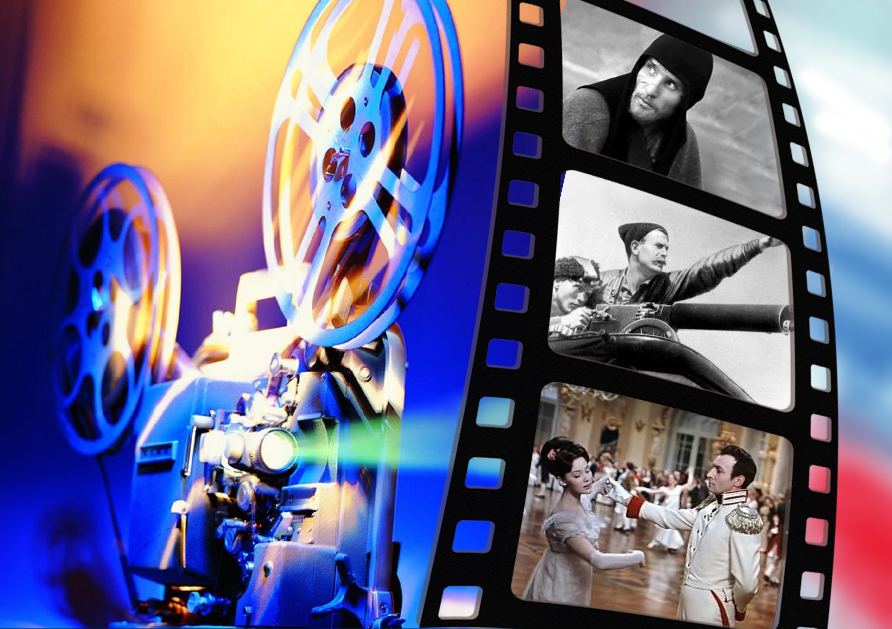

Россия – один из светочей мировой культуры – страна сумевшая создать и сохранить свое духовное богатство сквозь века, невзирая на сложную историю, полную кровопролитных войн и сражений. Удивительно, но понятие «русская культура» олицетворяет собой не только уникальное духовное наследие русского народа с его традициями и обычаями. Русская культура – это образ жизни русского народа, способ его мышления. Это целый мир – самобытный, богатый, многоликий – непостижимый, как загадочная русская душа и великий, как героический русский народ.
Национальная одежда - это часть культуры народа. Она формируется в зависимости от особенностей климата, мировоззрения и рода деятельности людей. Каждый народ должен знать свое прошлое и его традиции. Во многих странах национальная одежда используется на праздниках и дома, а в России очень мало кто знает, как одевались наши предки. Когда говорят о традиционной одежде, большинство людей представляет женщину в вышитой рубахе, кокошнике и сарафане. Да и с ними большинство знакомо только по фото. Народные костюмы же на самом деле отличались большим разнообразием. По ним можно было судить о социальном статусе владельца, его возрасте, семейном положении и роде деятельности. Народные костюмы России были разными в зависимости от географического положения. Например, только на севере носили сарафаны, а в южных районах поверх рубахи надевалась понева.
В основном изучены народные костюмы России с 18 века. Много одежды сохранилось в музеях, частных коллекциях и в обычных деревенских домах. Из произведений искусства тоже можно узнать, как выглядели народные костюмы России. Картинки из старых книг дают представление о традициях и культуре народа. О том же, как одевались наши предки ранее, мы узнаем по отрывочным сведениям из летописей, по археологическим раскопкам или из сказок. Археологи по крупицам восстанавливают не только фасон и расцветку одежды людей из захоронений, но и состав ткани и даже вышивку и украшения. Ученые выяснили, что до 18 века и крестьяне, и бояре одевались одинаково, различия были лишь в богатстве тканей и отделки. Петр Первый запретил боярам носить народную одежду, и с этого времени она осталась только в среде простых людей. В деревнях традиционный русский костюм был распространен еще в начале 20 века, правда наряжались в него только по праздникам.
Русская народная музыка берёт начало в фольклоре славянских племён, живших на территории Киевской Руси. Так как этнический состав населения был очень разнородным, русская музыка включала в себя, кроме славянских, также финно-угорские, тюркские и другие прототипы. Многие виды дошедших до нашего времени (начало XXI века) песен имеют языческие корни, иногда с влиянием христианской обрядности. Среди основных жанров народной музыки можно выделить календарные обрядовые песни, свадебные, эпические, танцевальные и лирические песни. Народная музыка была больше песенной, чем инструментальной (возможно, под влиянием церковного запрета на музыкальные инструменты в храме). частушки. Народные инструменты в фольклоре используются обычно в быту пастухов или для некоторых видов танцев и песен. Наиболее распространены: струнные инструменты (гудок, гусли), духовые инструменты (дудка, жалейка/рожок, кувиклы (флейта Пана). В летописях упоминаются: военные трубы, охотничьи рога, бубны. В эпоху Средневековья скоморохи — исполнители народной музыки подвергались преследованиям, а музыкальные инструменты уничтожались, поэтому оригинальные русские музыкальные инструменты до современности почти не дошли. Такие инструменты, иногда ассоциирующиеся с русской музыкой, как балалайка, мандолина, гитара, баян (гармонь), являются инструментами западноевропейского происхождения, и распространились в России сравнительно поздно (XIX—XX века). В XIX веке музыкантом В. В. Андреевым был создан так называемый оркестр русских народных инструментов.
В отличие от других видов искусства скульптура не имела в России столь длительных и сильных традиций. Скульптура с первых шагов объединяет портрет, монументальную статую, декоративный барельеф и медальерное дело. В основном в те времена использовалось восковое и бронзовое литье, реже — белый камень и мрамор. Широкое распространение получила лепнина из алебастра, резьба по дереву. Большую роль в развитии искусства русской скульптуры сыграли поездки людей за границу. Они знакомились с античной скульптурой и даже привозили с собой в Россию. Использование скульптуры в декоративных целях началось уже с петровских времен, в частности, барельефами украшались триумфальные сооружения, фасады Летнего дворца и т.п.
Во 2-й половине 18-го века произошел замечательный подъем русской скульптуры. Блестящие мастера этого периода — Ф.Шубин, Ф.Гордеев, И.Прокофьев, Ф.Щедрин, И.Мартос — ничем не уступают зарубежным скульпторам своего времени, а кое в чем и превосходят их. Хотя русские мастера по-своему каждый индивидуален, однако все они основываются на общих творческих принципах. Объясняется это тем, что все скульпторы окончили Петербургскую Академию художеств и учились у выдающегося педагога — француза Никола Жилле. Огромную роль сыграл и классицизм, который предполагал глубокое изучение памятников античности. Широко распространились сюжеты, связанные с античной мифологией, библейскими преданиями, историческими событиями. Становится важным следовать высоким идеям гражданственности и патриотизма. Под влиянием античности, скульпторы воспевают героическую, мужественную красоту обнаженного человеческого тела, чаще мужского, реже — женского.
Традиции в области народных художественных промыслов и ремесел включают отобранные и отшлифованные многими поколениями мастеров наиболее выразительные пропорции и формы предметов, их колористический строй, в орнаменте художественное отображение природной среды, флоры и фауны, на базе которых сформировалась данная орнаментальная культура и накопленные веками навыки мастерства в обработке различных природных материалов. Из поколения в поколение передавалось только то, что жизненно, прогрессивно, что нужно людям и способно к дальнейшему развитию. В Древней Руси вся жизнь людей была буквально пронизана стремлением к красоте и гармонии с природной средой, Дом, очаг, мебель, орудия труда, одежда, утварь, игрушки - все, к чему прикасались руки народных мастеров, воплощало их любовь к родной земле и врожденное чувство прекрасного, И тогда обычные бытовые предметы становились произведениями искусства. Красоту их формы дополняли декоративные украшения в виде орнамента, изображений людей, зверей, птиц, сюжетных сценок.
Издревле народные мастера в своем творчестве использовали то, что давала им сама природа - дерево, глину, кость, железо, лен, шерсть. Природа постоянно служила главным источником вдохновения народных умельцев. Но, воплощая в своих произведениях образы природы, мастера никогда не копировали ее буквально. Озаренная народной фантазией реальность приобретала порой волшебные, сказочные черты, в ней быль и вымысел представлялись неразделимыми Именно это своеобразие народного декоративно-прикладного творчества, его неповторимая выразительность и соразмерность, вдохновляли и продолжают вдохновлять профессиональных художников. Однако не всем из них удается в полной мере постичь и переосмыслить всю его глубину и духовный потенциал. В современных условиях возрастает потребность народа в народном искусстве, в его подлинности, духовности. Но найти пути к сохранению народного искусства, к его плодотворному развитию можно только понимая его сущность, творческую и духовную, его место в современной культуре. Народное декоративно-прикладное творчество разнообразно. Это — вышивка, керамика, художественные лаки, ковроделие, художественная обработка дерева, камня, металла, кости, кожи и т. д.
Место русской культуры определяется ее многообразнейшими связями с культурами многих и многих других народов Запада и Востока. Об этих связях можно было бы говорить и писать без конца. И какие бы ни были трагические разрывы в этих связях, какие бы ни были злоупотребления связями, все же именно связи – самое ценное в том положении, которое заняла русская культура (именно культура, а не бескультурье) в окружающем мире.
Значение русской культуры определялось ее нравственной позицией в национальном вопросе, в ее мировоззренческих исканиях, в ее неудовлетворенности настоящим, в жгучих муках совести и поисках счастливого будущего, пусть иногда ложных, лицемерных, оправдывающих любые средства, но все же не терпящих самоуспокоенности. Русская культура иная по типу, чем культуры Запада. Это касается прежде всего Древней Руси, и особенно ее XIII–XVII веков. Игорь Грабарь считал, что зодчество Древней Руси не уступало западному. Уже в его время, то есть в первой половине XX века, было ясно, что не уступает Русь и в живописи, будь то иконопись или фрески. Сейчас к этому списку искусств, в которых Русь никак не уступает другим культурам, можно прибавить музыку, фольклор, летописание, близкую к фольклору древнюю литературу.
Русский театр ведет свое начало с древности. Его истоки - это обряды, праздники, связанные с языческой культурой славян. Они сопровождались магическими действиями, песнями, плясками, заклинаниями. В представлениях принимали участие ряженые, которые изображали вымышленные мифологические существа, языческих богов и т.д. В истории русского театра принято выделять несколько этапов. Первый этап начинается с формирования родового общества и длится до XVII в. Второй этап завершается созданием постоянного профессионального театра в середине XVIII в. Следующий период - с конца XVIII в. до начала XX в., который ознаменовал появление режиссерского театра и новых эстетических концепций.
Первый этап - самый длительный в истории русского театра. Ни один праздник на Руси не обходился без театрализации. Сначала это были простые представления, в которых принимали участие целые деревни, позже они превратились в народные драмы. Магический элемент уже терял свою силу и значение - зарождались элементы коллективного творчества. Первоначально представления были хороводного типа, в них преобладала монолитность драматического и хорового действия. Все это сопровождалось диалогами и монологами, песнями, которые наполняли представления нужным смыслом. Известны так называемые русалии, которые проводились при встрече весны и представляли собой действа с участием ряженых в бесов и другую нечистую силу. Они существовали вплоть до XV в., когда смысл "русалий" существенно поменялся. На Руси, как упоминается в летописях, существовали скоморохи - бродячие певцы, музыканты, дрессировщики, акробаты. Многие связывают становление театра на Руси именно с появлением скоморохов. Отношение к ним было неоднозначным: с одной стороны, их воспринимали как носителей языческой культуры, с другой - как шутов с налетом светскости. Скоморохи были талантливыми и разносторонними исполнителями. Они умели играть на инструментах, исполнять песни, разыгрывать сценки, изображать зверей и птиц и т.д. За ними прочно закрепилась слава острословов и насмешников - представления, в которых принимали участие скоморохи, всегда искрились юмором или сатирой, создавали у зрителей веселое настроение. Выступления скоморохов были неотъемлемым элементом любого праздника: их приглашали выступать во дворах князей, бояр, они давали представления и на улицах, площадях, ярмарках, вовлекая в действо зрителей. Позже скоморошество подверглось преследованиям и гонению, так как церковь приравнивала их к язычникам и карала наравне с ведьмами и колдунами.
История российского кино своеобразна. Суровые нравы плюс характерные черты определенных политических периодов наложили на российский кинематограф свой отпечаток. Впрочем, это не помешало появлению в российской киноиндустрии ярких звезд и талантливых кинорежиссеров. В конце 19-го начале 20 века короткометражные фильмы, которые снимались в России, были в основном посвящены жизни монаршей семьи, к тому же подвергались цензуре. В появившихся кинотеатрах транслировались иностранные фильмы, популярные в ту эпоху. Первым российским фильмом считается картина «Понизовая вольница» («Стенька Разин», «Стенька Разин и княжна»). Режиссером фильма выступил Владимир Ромашков, а сценаристом Василий Гончаров. Руководство и финансирование фильма осуществлялось предпринимателем Александром Дранковым. Как удалось пропустить сквозь цензуру тему про вольного казака Степана Разина, история умалчивает. Картина, естественно, прошла жесткую «чистку».
Фильм «Стенька Разин» был немым, сцены длились буквально минуту, а сам фильм имел продолжительность около 6 минут. Но зрелище для того времени было грандиозным, в «батальных» сценах были заняты около сотни артистов театров, и зрители шли в кинотеатр на премьеру потоком. К 1910 году российский кинематограф обрел свое лицо. Появилось достаточно много фильмов в различных жанрах – детектив, мелодрама, историческая и военная тематика. В России появились первые кинозвезды - Вера Холодная, Иван Мозжухин, Владимир Максимов. Следующий период развития российского кино – это годы революции и гражданской войны. Пролетарское искусство сложно было назвать высокохудожественным, тем не менее, оно вызывало интерес даже за рубежом. Одно из ярких русских имен, которое вошло в историю мирового кинематографа – имя Сергея Эйзенштейна, автора фильмов «Броненосец Потемкин» (1925) и «Октябрь» (1927). Идеология мировой революции вызывала тогда живой интерес у мировой общественности.
Период 30-х – 40-х годов был неоднозначным. С одной стороны жесткая сталинская цензура, героическая и патриотическая тематика, идеологический подтекст. С другой стороны яркие комедии и новые звезды, такие, как актриса Любовь Орлова, режиссер Григорий Александров. Фильмы, вышедшие в то время, в мире были практически неизвестны. Играл роль «железный занавес» и негативное восприятие жизни в России в западных странах. Сами же жители СССР свое кино очень любили. Кинотеатры пользовались популярностью и часто были заполнены до отказа. Яркие имена в мире российского кинематографа в 60-х - 80х годах - это режиссеры Андрей Тарковский, Сергей Параджанов, Кира Муратова. Известные фильмы – «Солярис», «Два бойца», «Летят журавли», «Весна на Заречной улице» и многие другие. Еще один переломный этап в истории русского кинематографа наметился в 90-е годы, в эпоху перестройки. Фильмы того времени отличались провокационностью, порой излишним негативизмом. Многие критики и сегодня склоняются к мысли, что история российского кинематографа далеко не закончена. В русском кино продолжается поиск стиля и самобытности.